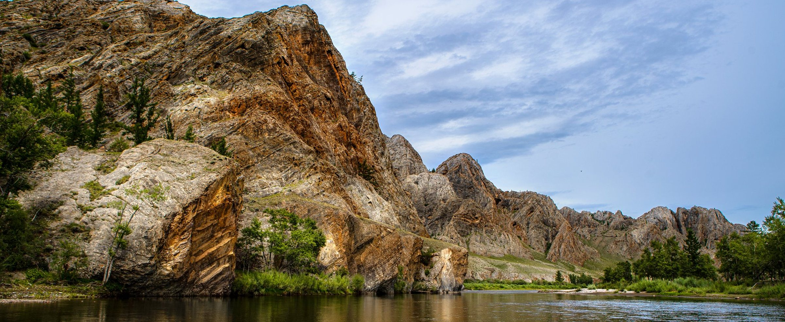
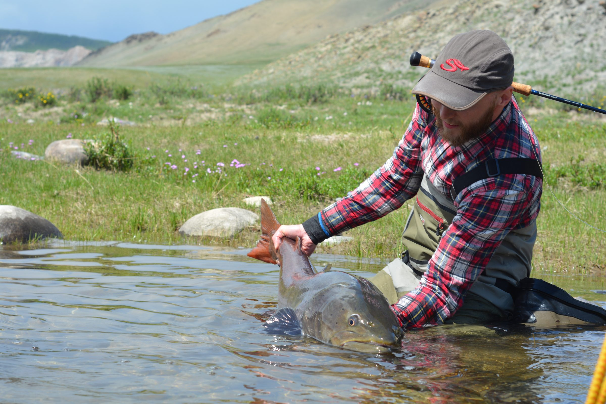

5 trips · 2 rivers · June–October
Our trips
Five small-group float trips on the Delgermurun and Onon. Compare them side by side, then enquire — we reply within 48 hours with dates and pricing.
Khuvsgul · Northern Mongolia · 2 trips · June–August
Delgermurun River

DELGERMURUN RIVER · JUNE–AUGUST
Classic Canyons Adventure
Spectacular canyon water with fully serviced riverside ger camps. Our most comfortable float — new water every day while camp moves ahead of you.
Contact us about available dates
Combine with Headwaters Expedition

DELGERMURUN RIVER · JUNE–AUGUST
Headwaters Expedition
Our hardest trip: wade-and-walk the upper river with horse and camel support, sleeping in ger and wilderness tent camps far from any road.
Contact us about available dates
Combine with Classic Canyons Adventure
Khentii · Eastern Mongolia · 3 trips · September–October
Onon River

ONON RIVER · SEPTEMBER–OCTOBER
Upper River Adventure
A comfortable drift-boat float through the upper Onon valley, with riverside ger camps set up ahead of you each evening.
Contact us about available dates
Combine with Lower River

ONON RIVER · SEPTEMBER–OCTOBER
Lower River Adventure
A more rugged float down the lower Onon — tent-tipi camps first, then gers, plus a wade-and-walk day. Roughing it, with the fishing to match.
Contact us about available dates
Combine with Buryat + Upper River

ONON RIVER · AUGUST–OCTOBER
Buryat Headwaters Expedition
The remote upper Onon from wilderness tent camps — just two anglers per departure, as far from other people as the river runs.
Contact us about available dates
Combine with Upper + Lower River
SIDE BY SIDE
Compare the trips
| TRIP | Classic Canyons | Headwaters Expedition | Upper River | Lower River | Buryat Headwaters |
|---|---|---|---|---|---|
| River | Delgermurun | Delgermurun | Onon | Onon | Onon (upstream) |
| Season | June–August | June–August | Sept–October | Sept–October | Aug–October |
| Length | 10 days | 13 days | 9 days | 11 days | 10 days |
| Group | 4–8 anglers | 4 (private up to 6) | 4–8 anglers | 4 anglers | 2 anglers |
| Camps | Riverside gers | Gers + wilderness tents | Riverside gers | Tent-tipi, then gers | Wilderness tents |
| Fishing | Drift boat | Wade & walk | Drift boat | Drift boat + wade day | Drift boat |
| Effort | EffortComfort | EffortExpedition | EffortComfort | EffortActive | EffortDemanding |
| Combine with | Headwaters | Classic Canyons | Lower River | Buryat + Upper | Upper + Lower |
AIRPORT TO AIRPORT
Included in every trip
Airport transfers
We meet you at the airport in Ulaanbaatar and take you back at the end of the trip.
Hotel nights in Ulaanbaatar
Your hotel nights in Ulaanbaatar are part of the trip.
All meals outside Ulaanbaatar
From the day you leave the city, every meal is included.
Fishing licences and permits
We arrange the licences and permits for the water you fish.
Guides — two anglers per guide
Experienced river guides, with one guide for every two anglers.
Flies
Flies are included — local patterns that work on these rivers.
HOW WE RUN EVERY TRIP
Our standards
Content pending from the client — quality standards and awards.
Safety
Standard placeholder — content pending from client.
Guides
Standard placeholder — content pending from client.
Camps
Standard placeholder — content pending from client.


Not sure which trip?
Tell us how you like to fish and travel — our team will suggest the right river and dates, and reply within 48 hours.
Prices on request · Small groups of 2–8 anglers · Since 2004